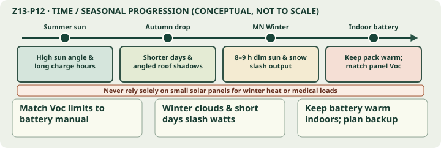

Z13-P12 · Home survival and utilities · New manuscript
Set realistic expectations for portable solar recharging in Upper Midwest winters
Prevent relying solely on small foldable solar panels during short cloudy Minnesota winter days when output drops sharply.
When it applies · Households pairing foldable solar panels with portable battery power stations across seasons.
Equipment · Manufacturer-compatible solar panels, charge cables, battery station, and clear south-facing snow-free mounting spot.

Actions
- Match panel open-circuit voltage (Voc) and connector limits strictly to your power station manual—exceeding input voltage destroys internal charge controllers permanently.[U09]
- Plan honestly for seasonal sun limits: in northern Minnesota December–February, low sun angle, short 8-to-9-hour daylight, cloud cover, and snow accumulation often cut portable solar output to a tiny fraction of summer nameplate wattage.[U09, U10]
- Keep the battery power station itself indoors at safe room temperature while routing only the low-voltage solar cord outdoors to clear, south-facing, snow-brushed panels, and always maintain grid-precharged or fuel-alternative backups for winter storms.[U09, U10]
Failure recognition · Expecting a 100-watt foldable panel during an overcast January snowstorm to run a household refrigerator and medical equipment continuously.[U09, U10]
Verify · Confirm panel voltage compatibility, battery stored warm indoors, and non-solar backup planned for multi-day winter overcast periods.[U09, U10]
Stop or change course · Damaged solar cables, melted connectors, or battery temperatures below manufacturer charging thresholds require disconnecting immediately.[U09]
Evidence and editorial notes
- U09 · FEMA / Ready.gov · Power Outages (current web edition)
- Section: Battery Backup, Power Stations, and Lithium-Ion Safety · Conditions: Portable battery power stations, UPS units, and rechargeable packs during outages
Support: Use UL/NRTL-listed battery stations within rated wattage limits, charge and store lithium batteries away from combustible bedding/exits, stop using swollen or overheated packs, and account for cold-weather battery capacity loss.
Limitations: Portable battery banks cannot safely power high-draw electric resistance heaters or hardwired furnaces without approved transfer equipment. · Conflicting evidence: None; separates clean indoor battery backup from fuel-combustion hazards.
Editorial note: Grounds portable power sizing, inverter limits, and battery fire safety. · Specialist reviewer: Electrical safety and fire prevention
Primary source · checked 2026-11-24 - U10 · FEMA / Ready.gov · Winter Weather (current web edition)
- Section: Winter Household Resilience > Frozen Pipes, Ice Dams, and Heating Loss · Conditions: Sub-zero Upper Midwest winter outages and prolonged cold snaps
Support: Prevent burst pipes by insulating exposed lines, keeping cabinet doors open, shutting off and draining water lines per plumbing guidance if indoor temperatures drop toward freezing, and consolidating household occupants into one safe insulated interior room.
Limitations: Draining hydronic boilers or gas water heaters requires exact manufacturer/plumber steps to prevent equipment damage or gas leaks. · Conflicting evidence: None; regionalizes winter home defense for Minnesota conditions.
Editorial note: Anchors winter pipe protection, thermal-zone consolidation, and abandonment thresholds. · Specialist reviewer: Residential plumbing, HVAC, and cold-weather emergency management
Primary source · checked 2026-11-24
Source lineage · FEMA Ready.gov Power Outages and Winter Weather; new manuscript · Classification · New manuscript.